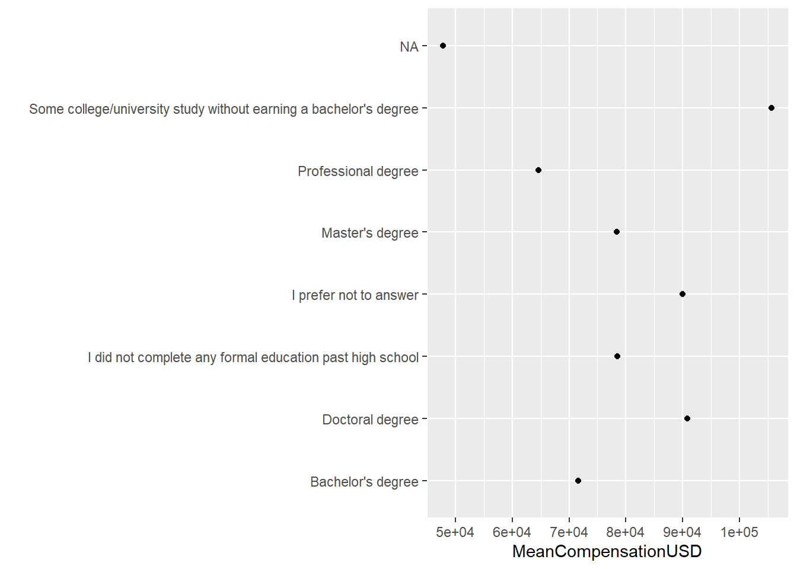
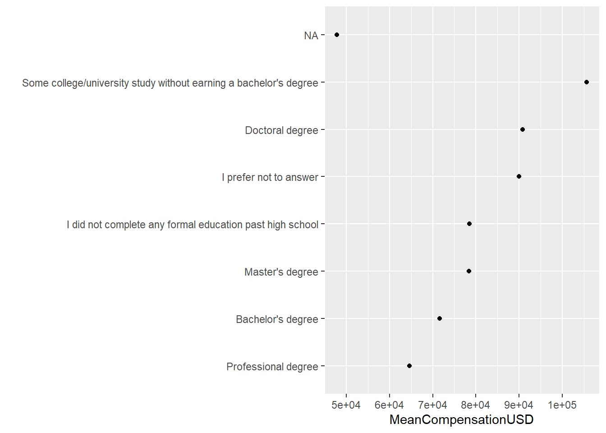
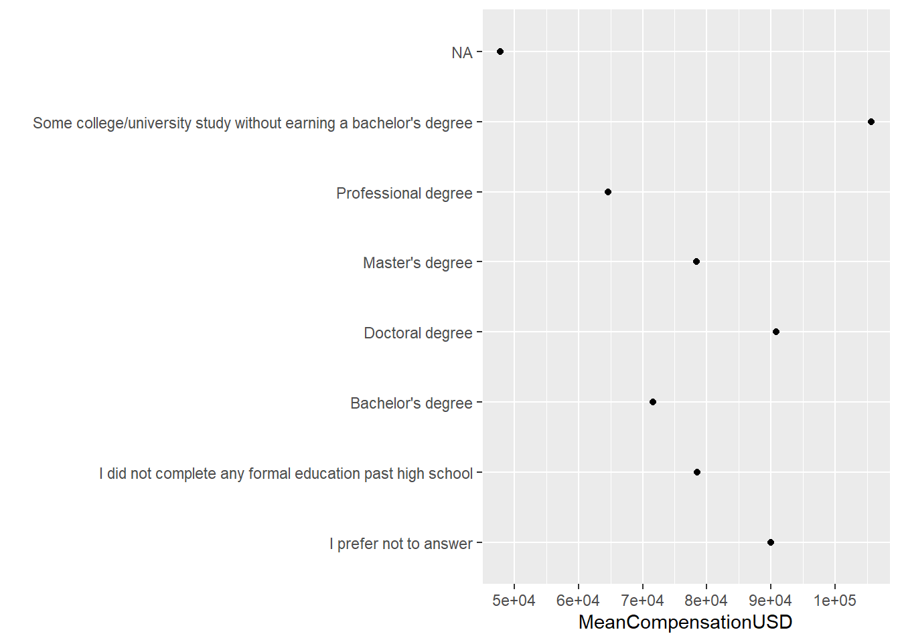
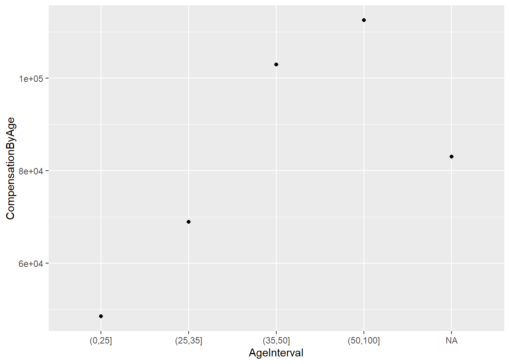

Poglavje 3 Nizi, kategorične spremenljivke in datumi
Pri delu s podatki se pogosto srečamo s posebnimi podatkovnimi tipi, kot so nizi, kategorične spremenljivke in datumi. Z nizi smo že delali v prvih dveh poglavjih. Delali smo tudi s kategoričnimi spremenljivkami, čeprav tega nismo poudarili. V tem poglavju bomo spoznali naprednejše operacije nad temi podatkovnimi tipi v okviru zbirke tidyverse ter predstavili praktične primere, dobre prakse in pasti pri delu z njimi.
Konec poglavja pa bomo posvetili branju in pisanju podatkov v različnih oblikah.
3.1 Priprava
Nizi
Najprej si poglejmo najbolj uporabne funkcije za delo z nizi.
Nize lahko združujemo na več načinov:
crke <- c("A", "B", "C", "D")
stevilke <- c("1", "2", "3", "4")
str_c(crke, stevilke)## [1] "A1" "B2" "C3" "D4"str_c(crke, stevilke, sep = "-")## [1] "A-1" "B-2" "C-3" "D-4"str_c(crke, stevilke, collapse = "-")## [1] "A1-B2-C3-D4"Obratno jih lahko razčlenimo na več manjših nizov:
str_split("A1-B2-C3-D4", pattern = "-")## [[1]]
## [1] "A1" "B2" "C3" "D4"Zelo uporabna je tudi funkcija za zamenjavo podnizov.
str_replace("A1-B1-A2-B2", pattern = "1", "(ena)")## [1] "A(ena)-B1-A2-B2"str_replace_all("A1-B1-A2-B2", pattern = "1", "(ena)")## [1] "A(ena)-B(ena)-A2-B2"str_replace_all("A1-B1-A2-B2", c("1" = "(ena)", "2" = "(dva)"))## [1] "A(ena)-B(ena)-A(dva)-B(dva)"Poglejmo, kako bi iz zbirke sadežev v že vgrajenem nizu fruit poiskali vse nize, ki vsebujejo berry.
length(fruit)## [1] 80str_subset(fruit, "berry")## [1] "bilberry" "blackberry" "blueberry" "boysenberry" "cloudberry"
## [6] "cranberry" "elderberry" "goji berry" "gooseberry" "huckleberry"
## [11] "mulberry" "raspberry" "salal berry" "strawberry"Podobno lahko vrnemo logični vektor nizov, ki vsebujejo berry.
str_detect(fruit, "berry")## [1] FALSE FALSE FALSE FALSE FALSE TRUE TRUE FALSE FALSE TRUE TRUE FALSE
## [13] FALSE FALSE FALSE FALSE FALSE FALSE TRUE FALSE TRUE FALSE FALSE FALSE
## [25] FALSE FALSE FALSE FALSE TRUE FALSE FALSE TRUE TRUE FALSE FALSE FALSE
## [37] FALSE TRUE FALSE FALSE FALSE FALSE FALSE FALSE FALSE FALSE FALSE FALSE
## [49] FALSE TRUE FALSE FALSE FALSE FALSE FALSE FALSE FALSE FALSE FALSE FALSE
## [61] FALSE FALSE FALSE FALSE FALSE FALSE FALSE FALSE FALSE TRUE FALSE FALSE
## [73] TRUE FALSE FALSE TRUE FALSE FALSE FALSE FALSEFunkcija str_detect() je zelo uporabna pri izbiranju vrstic glede na nize. Običajno jo uporabljamo v kombinaciji z regularnimi izrazi, ki jih bomo spoznali v jedru tega poglavja.
Kategorične spremenljivke
Pri pripravi na kategorične spremenljivke bomo uporabili podatke o uspehu študentov na izpitu:
tib <- tibble(
ime = c("Maja", "Ales", "Tom", "Barbara", "Simon", "Tina"),
spol = c("z", "m", "m", "z", "m", "z"),
ocena = c(10, 10, 6, 8, 8, 7),
dan_izpita = c(8, 8, 16, 16, 8, 23),
mesec_izpita = rep(6, 6),
leto_izpita = rep(2021, 6),
opravljene_vaje = c(1, 1, 1, 1, 0, 1),
procenti_vaje = c(70, 65, 80, 90, 30, 75)
)
tib## # A tibble: 6 x 8
## ime spol ocena dan_izpita mesec_izpita leto_izpita opravljene_vaje
## <chr> <chr> <dbl> <dbl> <dbl> <dbl> <dbl>
## 1 Maja z 10 8 6 2021 1
## 2 Ales m 10 8 6 2021 1
## 3 Tom m 6 16 6 2021 1
## 4 Barbara z 8 16 6 2021 1
## 5 Simon m 8 8 6 2021 0
## 6 Tina z 7 23 6 2021 1
## # ... with 1 more variable: procenti_vaje <dbl>Spremenimo spol v nominalno spremenljivko (brez ureditve) in oceno v ordinalno spremenljivko (obstaja vrsti red vrednosti):
tib <- tib %>% mutate(spol = factor(spol),
ocena = factor(ocena, ordered = TRUE))
tib$spol## [1] z m m z m z
## Levels: m ztib$ocena## [1] 10 10 6 8 8 7
## Levels: 6 < 7 < 8 < 10Nivoje faktorja (levels) lahko uredimo tudi glede na vrednosti v nekem drugem stolpcu. To običajno pride prav pri vizualizaciji.
tib <- tib %>%
mutate(spol = fct_reorder(spol, procenti_vaje, .desc = TRUE))
tib$spol## [1] z m m z m z
## Levels: z mDatumi
Za delo z datumi bomo uporabljali paket lubridate. Datume lahko z lubridate shranimo na več načinov. Preprosto lahko sestavimo datum s posameznimi komponentami:
library(lubridate)
make_date(year = 2021, month = 6, day = 11)## [1] "2021-06-11"Ali iz niza:
ymd("2021-06-11")## [1] "2021-06-11"Lahko dodamo tudi čas:
make_datetime(year = 2021, month = 6, day = 11, hour = 11, min = 30, tz = "CET")## [1] "2021-06-11 11:30:00 CEST"Z datumi lahko tudi računamo:
my_date <- make_date(year = 2021, month = 6, day = 11)
my_date## [1] "2021-06-11"my_date + days(2)## [1] "2021-06-13"my_date + months(3)## [1] "2021-09-11"Shranjevanje podatkov v csv
V pripravi v 2. poglavju smo že spoznali funkcijo rear_csv2() za branje podatkov iz tekstovnih datotek. Podatke lahko tudi shranimo v tekstovno datoteko s funkcijo write_csv2():
write_csv2(tib, "./data-raw/studenti.csv")Naloga 1: Datoteko ocene.csv v mapi data-raw preberite s funkcijami paketa readr (read_csv2() in write_csv2()). Shranite jo kot ocene2.csv in to datoteko preberite nazaj. Nato naredite enako z baznimi funkcijami v R (read.csv2() in write.csv2()). Kaj opazite?
Z readr:
## # A tibble: 6 x 7
## ime spol ocena dan_izpita mesec_izpita leto_izpita opravljene_vaje
## <chr> <chr> <dbl> <dbl> <dbl> <dbl> <dbl>
## 1 Maja z 7 8 6 2021 1
## 2 Ales m 10 8 6 2021 1
## 3 Tom m 6 16 6 2021 1
## 4 Barbara z 8 16 6 2021 1
## 5 Simon m 8 8 6 2021 0
## 6 Tina z 7 23 6 2021 1Z R:
## X ime spol ocena dan_izpita mesec_izpita leto_izpita opravljene_vaje
## 1 1 Maja z 7 8 6 2021 1
## 2 2 Ales m 10 8 6 2021 1
## 3 3 Tom m 6 16 6 2021 1
## 4 4 Barbara z 8 16 6 2021 1
## 5 5 Simon m 8 8 6 2021 0
## 6 6 Tina z 7 23 6 2021 1Naloga 2: Ponovno preberite ocene.csv ter:
- spremenite stolpec
opravljene_vajev kategorične vrednosti, - zamenjajte stolpce
leto_izpita,mesec_izpita,dan_izpitazdatum_izpita, ki vsebuje vse te podatke, - izberite samo imena, ki se začnejo na ‘T’ in podatke shranite v datoteko oceneT.csv.
## ime spol ocena opravljene_vaje datum_izpita
## 1 Tom m 6 1 2021-06-16
## 2 Tina z 7 1 2021-06-23Delo s šumniki
Pri delu z nizi RStudio uporablja privzeto kodiranje vašega operacijskega sistema. Preprost način, da preverite, ali R uporablja pravilno kodiranje, je, da v konzolo napišete “čebula.” Nazaj morate dobiti enak niz in ne “cebula” ali celo “პbula.”
"čebula"## [1] "čebula"Če R ne vrne istega niza, je potrebno nastaviti privzeto kodiranje na svojem operacijskem sistemu. Da vidimo, katero kodiranje je trenutno uporabljeno, lahko napišemo:
Sys.getlocale()## [1] "LC_COLLATE=Slovenian_Slovenia.1250;LC_CTYPE=Slovenian_Slovenia.1250;LC_MONETARY=Slovenian_Slovenia.1250;LC_NUMERIC=C;LC_TIME=Slovenian_Slovenia.1250"Pri tem izpisu vidimo, da uporabljamo sloveski nabor znakov CP1250. Če imate težave, lahko to začasno spremenite z ukazom:
Sys.setlocale(category = "LC_ALL", locale = "Slovenian_Slovenia.1250")## [1] "LC_COLLATE=Slovenian_Slovenia.1250;LC_CTYPE=Slovenian_Slovenia.1250;LC_MONETARY=Slovenian_Slovenia.1250;LC_NUMERIC=C;LC_TIME=Slovenian_Slovenia.1250"Oziroma lahko na primer v OS Windows nastavite privzeto kodiranje pod “Settings -> Time & Language -> Region -> Regional Format.” Tukaj izberite “Slovenian (Slovenia).”
Za slovenski OS Windows: “Nastavitve -> Ura in Jezik -> Regija -> Območne nastavitve” in izberite “Slovenščina (Slovenija).”
3.2 Nizi
Zbirka paketov tidyverse vsebuje paket stringr, ki je namenjen delu z nizi. Vsi ukazi v paketu se začnejo s str_, kar v kombinaciji s funkcionalnostjo avtomatskega dopolnjevanja omogoča hitro izbiro in pregled vseh funkcij.
V jeziku R lahko za definiranje niza uporabimo enojne (’) ali dvojne navednice ("). R bo rezultat sicer vedno vrnil v dvojnih navednicah.
niz_dvojne_navednice <- "urejanje podatkov"
niz_enojne_navednice <- 'urejanje podatkov'
niz_dvojne_navednice## [1] "urejanje podatkov"niz_enojne_navednice## [1] "urejanje podatkov"Če želimo znotraj niza uporabiti dvojne navednice, lahko za definicijo uporabljamo enojne in obratno:
citat1 <- "Jure je rekel: 'Citiram Janeza'."
citat2 <- 'In Janez je rekel: "Citiram Jureta".'
citat1## [1] "Jure je rekel: 'Citiram Janeza'."citat2## [1] "In Janez je rekel: \"Citiram Jureta\"."Izpis v drugem primeru uporablja tako imenovan escape character (\), ki omogoča tudi vpis tabulaterjev (\t), znakov za novo vrstico (\n) in podobno. Vse znake, ki jih je tako možno zapisati, si lahko ogledate z ukazom ?"'".
Niz lahko vključuje tudi vse posebne znake, ki jih podpira Unicode. To je standard za konsistentno kodiranje teksta, ki vsebuje preko 100000 znakov. Za vnos znakov unicode uporabite \uxxxx, kjer je xxxx koda znaka, ki ga lahko poiščete na strani https://unicode.org/charts/.
normalna_porazdelitev <- "Normal(\u03BC, 1)"
normalna_porazdelitev## [1] "Normal(µ, 1)"Dolžino nizov poiščemo s funkcijo str_length():
str_length(c("tri", "štiri", "", citat1, normalna_porazdelitev))## [1] 3 5 0 32 12Za združevanje nizov se uporablja str_c(), ki mu lahko dodamo tudi niz sep, ki ga vrine med vse podane nize:
str_c("paradižnik", "bučke", "jabolka", "paprika", "jagode", sep = ", ")## [1] "paradižnik, bučke, jabolka, paprika, jagode"Če funkciji podamo vektorje lahko združimo tudi več nizov naenkrat. Pri tem bo število dobljenih nizov enako največjemu vektorju, manjši pa se bodo reciklirali, kar pomeni, da se bodo njihove vrednosti ponavljale, dokler ne dosežejo dolžine najdaljšega vektorja.
str_c("Podpoglavje ", c(1, 2, 3, 4), ": ",
c("Nizi", "Faktorji", "Datumi", "Branje podatkov"))## [1] "Podpoglavje 1: Nizi" "Podpoglavje 2: Faktorji"
## [3] "Podpoglavje 3: Datumi" "Podpoglavje 4: Branje podatkov"Če želimo nize združiti zaporedno uporabimo collapse. Za izpis nizov brez escape znakov uporabite funkcijo cat():
poglavja <- str_c("Podpoglavje ", c(1, 2, 3, 4), ": ",
c("Nizi", "Faktorji", "Datumi", "Branje podatkov"), collapse = "\n")
poglavja## [1] "Podpoglavje 1: Nizi\nPodpoglavje 2: Faktorji\nPodpoglavje 3: Datumi\nPodpoglavje 4: Branje podatkov"cat(poglavja)## Podpoglavje 1: Nizi
## Podpoglavje 2: Faktorji
## Podpoglavje 3: Datumi
## Podpoglavje 4: Branje podatkovManjkajoče vrednosti lahko zamenjamo s str_replace_na().
str_replace_na(c("ena", "dva", NA, "štiri"), replacement = "tri!")## [1] "ena" "dva" "tri!" "štiri"3.2.1 Podnizi
Velikokrat pri delu z nizi potrebujemo le del niza ali pa želimo niz razdeliti na več manjših nizov. Poglejmo si na primeru niza " KUPI: paradižnik, bučke, jabolka, paprika, jagode. ", iz katerega želimo dobiti vektor sadja in zelenjave:
listek <- " KUPI: paradižnik, bučke, jabolka, paprika, jagode. "Najprej odstranimo odvečne začetne in končne presledke. To storimo s str_trim():
listek <- str_trim(listek)
listek## [1] "KUPI: paradižnik, bučke, jabolka, paprika, jagode."Funkcija str_sub() vrne podniz glede na indekse znakov:
str_sub(listek, 7, 16) # Vrne znake med indeksom 7 do 16.## [1] "paradižnik"str_sub(listek, 7) # Vrne znake od sedmega naprej.## [1] "paradižnik, bučke, jabolka, paprika, jagode."str_sub(listek, -7) # Vrne zadnjih sedem znakov.## [1] "jagode."str_sub(listek, -7, -2) # Vrne predzadnjih šest znakov.## [1] "jagode"S tem znanjem lahko odstranimo prvih šest znakov in zadnjega:
listek <- str_sub(listek, 7, -2)
listek## [1] "paradižnik, bučke, jabolka, paprika, jagode"Sedaj, ko imamo elemente samo naštete in ločene z vejico, jih lahko preprosto razdelimo s funkcijo str_split(), ki ji podamo vzorec za ločevanje:
str_split(listek, pattern = ", ")## [[1]]
## [1] "paradižnik" "bučke" "jabolka" "paprika" "jagode"3.2.2 Iskanje vzorcev z regularnimi izrazi
Regularni izrazi so močno orodje za iskanje poljubnega vzorca v nizih. V tem poglavju bo predstavljena le osnovna funkcionalnost regularnih izrazov, saj gre za zelo obširno orodje. Za prikaz delovanja bomo uporabljali funkciji str_view() in str_view_all(), ki uporabljata paket htmlwidgets za prikaz rezultatov. Prva označi samo prvo ujemanje, druga pa vsa ujemanja.
Regularni izrazi so nizi, ki določijo iskalni vzorec. Z njimi lahko, na primer, iščemo nize, ki se začnejo na določen podniz, končajo na določen podniz, vsebujejo posebne simbole in podobno. Uporabljamo jih lahko v vseh funkcijah paketa stringr, ki imajo kot vhod pattern.
Sestavimo dva seznama v katerih bomo iskali vzorce. Za začetek poiščimo vse vejice.
library(htmlwidgets)
listek1 <- "KUPI: paradižnik, bučke, jabolka, paprika, jagode. Aja, pa banane."
listek2 <- "KUPI: sok(3x), kruh, piškote, pašto(2x), sol in poper."
str_view_all(c(listek1, listek2), ",")Kaj pa pike?
str_view_all(c(listek1, listek2), ".")Pika je poseben znak pri regularnih izrazih, ki predstavlja poljuben znak. Zato smo dobili ujemanja z vsemi črkami. Da lahko dejansko poiščemo pike in druge posebne znake moramo uporabiti znak escape \, s katerim programu sporočimo, naj simbola za tem ne prebere kot regularni izraz. Tukaj se nam nekoliko zaplete, ker je znak \ že znak escape v R za tabulatorje (\t), nove vrstice (\n) itd. Zato, da vzorcu dejansko podamo \. moramo zapisati \\.. Tukaj si ponovno lahko pomagamo s funkcijo cat(), ki nam bo pokazala dejanski niz podan funkciji.
cat("\\.") # Poglejmo kakšen niz bo dejansko sprejela funkcija str_view_all().## \.str_view_all(c(listek1, listek2), "\\.")Regularni izrazi uporabljajo tudi dva posebna znaka, ki označujeta začetek ^ in konec $ niza. Poiščimo samo pike, ki zaključujejo nize:
str_view_all(c(listek1, listek2), "\\.$")V regularnih izrazih so zelo uporabne tudi naslednje sekvence.
\d: Ujemanje s poljubno števko;\s: Ujemanje s poljubnim presledkom (presledek, tabulator, nova vrstica);\b: Ujemanje s prehodom iz besednih znakov (črke) na nebesedne (ločila, presledki).[xyz]: Ujemanje z x, y ali z;[^xyz]: Ujemanje z vsem razen x, y in z. Strešica znotraj oglatih oklepajev pomeni negacijo;[[:digit:]]: Ujemanje s poljubnim številom;[[:alpha:]]: Ujemanje s poljubno črko, uporabite lahko tudi[[a-z]]in[[:lower:]]za vse male črke ali[[A-Z]]in[[:upper:]]za vse velike črke;[[:punct:]]: Ujemanje z ločili.
Poglejmo si uporabo nekaterih:
str_view_all(c(listek1, listek2), "\\dx") # Poiščemo vse številke, ki jim sledi x.str_view_all(c(listek1, listek2), "[čžš]") # Vse šumnike.str_view_all(c(listek1, listek2), "[aA].[aA]") # Dva a-ja s poljubnim znakom vmes.str_view_all(c(listek1, listek2), ".[\\s,.]") # Vse konce besed.str_view_all(c(listek1, listek2), "[a-f]") # Vse črke od a do f.str_view_all(c(listek1, listek2), "[[:punct:]]") # Vsa ločila.Znotraj oglatih oklepajev je pomen pike dobeseden znak pika. Tako, da ga ni potrebno zapisati kot \\. Priporočamo, da sami preizkušate še druge sekvence.
Navpična črta | pomeni ali:
str_view_all(c(listek1, listek2), "sol|sok")3.2.3 Ponovitve
Zelo uporabni so tudi ukazi za ponovitve znakov ali sekvenc, ki nam omogočajo iskanje nizov določenih dolžin. Ukazi za delo s ponovitvami so:
?: ponovi 0 ali 1 krat,*: ponovi 0 ali več krat,+: ponovi 1 ali več krat,{n}: ponovi natanko n krat,{n,}: ponovi n ali več krat,{,m}: ponovi m ali manj krat,{n,m}: ponovi med n in m krat.
Če znak za ponovitev uporabimo za enim znakom pomeni to ponovitev prejšnjega znaka. Lahko pa ga uporabimo tudi za oglatimi ali navadnimi oklepaji. Navadni oklepaji ločijo del regularnega izraza, podobno kot smo navajeni pri računanju z oklepaji. Določajo pa tudi skupino, o kateri bomo več povedali v naslednjem poglavju. Oglati oklepaji določajo izbiro, se pravi ponoviti se mora vsaj en od naštetih znakov.
Poiščimo najprej vse podnize, kjer se “an” ponovi enkrat:
str_view_all(c(listek1, listek2), "(an){1}")Poiščimo vse besede dolžine 3. Da določimo začetek in konec besede, uporabimo \\b, ki določa prehod med besednim in nebesednim znakom. Za tem izberemo poljuben nabor črk, ki se mora ponoviti 3-krat:
str_view_all(c(listek1, listek2), "\\b[:alpha:]{3}\\b")Poiščimo vse besede dolžine med 3 ali 5 znakov:
str_view_all(c(listek1, listek2), "\\b[:alpha:]{3,5}\\b")Poiščimo vse besede dolžine točno 3 ali 5 znakov. V tem primeru moramo uporabiti “ali”:
str_view_all(c(listek1, listek2), "\\b([:alpha:]{3}|[:alpha:]{5})\\b")Poskušajmo poiskati besede, ki se začnejo na p in končajo na k ali e.
str_view_all(c(listek1, listek2), "\\bp[:alpha:]*[ke]\\b")3.2.4 Skupine
Kot smo že videli lahko uporabimo tudi oklepaje, da ločimo del regularnega izraza od ostalih simbolov. Oklepaji pa definirajo tudi skupino, na katero se lahko sklicujemo z \x, kjer je x zaporedna številka skupine.
Poglejmo si uporabo le tega na že vgrajenem vektorju sadja. Parameter match = TRUE nam vrne le nize, pri katerih je prišlo do ujemanja.
str_view(fruit, "(..)\\1", match = TRUE)Zgornji regularni izraz z .. poišče dva poljubna znaka. Z (..) definiramo skupino. Z \1 oziroma \\1, pa zahtevamo, da se na tem mestu še enkrat nahaja točno to kar je bilo med oklepaji.
Poiščimo imena sadežev, ki imajo vsaj dve (lahko različni) ponavljajoči si črki:
str_view(fruit, "(.)\\1.*(.)\\2", match = TRUE)3.2.5 Uporaba regularnih izrazov
Uporabo regularnih izrazov si najprej pogljemo na preprostih podatkih, nato pa še na podatkih iz ankete.
Poiščimo sadje in zelenjavo, ki vsebuje šumnike:
seznam <- c("paradižnik", "bučke", "jabolka", "paprika", "jagode");
str_detect(seznam, "[čšž]")## [1] TRUE TRUE FALSE FALSE FALSEČe želimo namesto logičnega vektorja dobiti dejanska imena elementov, uporabimo str_subset():
str_subset(seznam, "[čšž]")## [1] "paradižnik" "bučke"Poglejmo, koliko samoglasnikov vsebuje vsaka beseda v seznamu. Pozor, funkcija str_count() ne zazna ponovitev, če se le-te prekrivajo:
str_count(seznam, "[aeiou]")## [1] 4 2 3 3 3str_count("ababa", "aba") # Ne zazna dveh ponovitev, ker se prekrivata.## [1] 1S funkcijo str_locate() vrnemo indekse lokacij najdenih vzorcev, s str_extract() pa dobimo ta vzorec oziroma podniz. S str_match() dobimo podskupine.
Poiščimo podnize do prvega šumnika.
str_locate(seznam, "^.*[čšž]")## start end
## [1,] 1 7
## [2,] 1 3
## [3,] NA NA
## [4,] NA NA
## [5,] NA NAstr_extract(seznam, "^.*[čšž]")## [1] "paradiž" "buč" NA NA NAstr_match(seznam, "(^.*)([čšž])")## [,1] [,2] [,3]
## [1,] "paradiž" "paradi" "ž"
## [2,] "buč" "bu" "č"
## [3,] NA NA NA
## [4,] NA NA NA
## [5,] NA NA NAV zadnjem primeru funkcija str_match() v prvem stolpcu vrne enako kot str_extract(), nato pa v naslednjih stolpcih vrne še vsako skupino posebej.
Preprosta in zelo uporabna pa je funkcija str_replace() oziroma str_replace_all(), s katero lahko zamenjamo dele nizov.
Prekrijmo šumnike z znaki “x”:
str_replace(seznam, "[čšž]", "x")## [1] "paradixnik" "buxke" "jabolka" "paprika" "jagode"Podamo lahko tudi zamenjavo za več ujemanj:
str_replace_all(seznam, c("č" = "c", "š" = "s", "ž"= "z"))## [1] "paradiznik" "bucke" "jabolka" "paprika" "jagode"Poglejmo si sedaj še uporabo na realnih podatkih. Najprej naložimo podatke:
ds_jobs <- read.csv2("./data-raw/DS-jobs.csv")
ds_jobs <- tibble(ds_jobs)
ds_jobs## # A tibble: 4,523 x 17
## Gender Country Age EmploymentStatus CurrentJobTitle LanguageRecomme~
## <chr> <chr> <int> <chr> <chr> <chr>
## 1 Female Austral~ 43 Employed full-time Business Analyst Python
## 2 Male Russia 33 Employed full-time Software Develop~ Python
## 3 Male Taiwan 26 Employed full-time Software Develop~ Python
## 4 Male United ~ 25 Employed part-time Researcher Python
## 5 Male United ~ 33 Employed full-time Scientist/Resear~ Matlab
## 6 Male Czech R~ 21 Employed part-time Other Python
## 7 Male Russia 22 Employed full-time Data Analyst Python
## 8 Male Netherl~ 51 Employed full-time Engineer R
## 9 Male Colombia 34 Employed full-time Data Scientist Python
## 10 Male Germany 41 Independent contrac~ Data Scientist Python
## # ... with 4,513 more rows, and 11 more variables: FormalEducation <chr>,
## # Major <chr>, CompensationAmount <dbl>, CompensationCurrency <chr>,
## # TimeGatheringData <int>, TimeModelBuilding <dbl>, TimeProduction <dbl>,
## # TimeVisualizing <dbl>, TimeFindingInsights <dbl>, TimeOtherSelect <int>,
## # ExchangeRate <dbl>Najbolj uporabna funkcija pri delu z nizi v podatkih je str_detect(), ki nam omogoča izbiro podmnožice vrstic. Pogosto jo kombiniramo z regularnimi izrazi. Poiščimo tiste vrstice, kjer imajo anketiranci več službenih nazivov. Ti so ločeni z znakom /:
ds_jobs %>%
select(CurrentJobTitle) %>%
filter(str_detect(CurrentJobTitle, "/"))## # A tibble: 946 x 1
## CurrentJobTitle
## <chr>
## 1 Software Developer/Software Engineer
## 2 Software Developer/Software Engineer
## 3 Scientist/Researcher
## 4 Software Developer/Software Engineer
## 5 Scientist/Researcher
## 6 Scientist/Researcher
## 7 Scientist/Researcher
## 8 Scientist/Researcher
## 9 Software Developer/Software Engineer
## 10 Scientist/Researcher
## # ... with 936 more rowsIzberimo samo tiste vrstice, kjer se CurrentJobTitle začne z “Data” in se EmploymentStatus konča s “full-time”:
ds_jobs %>%
select(EmploymentStatus, CurrentJobTitle) %>%
filter(str_detect(CurrentJobTitle, "^Data"),
str_detect(EmploymentStatus, "full-time$"))## # A tibble: 1,679 x 2
## EmploymentStatus CurrentJobTitle
## <chr> <chr>
## 1 Employed full-time Data Analyst
## 2 Employed full-time Data Scientist
## 3 Employed full-time Data Scientist
## 4 Employed full-time Data Scientist
## 5 Employed full-time Data Analyst
## 6 Employed full-time Data Scientist
## 7 Employed full-time Data Scientist
## 8 Employed full-time Data Analyst
## 9 Employed full-time Data Analyst
## 10 Employed full-time Data Scientist
## # ... with 1,669 more rowsVčasih so nizi v podatkih predolgi, oziroma lahko brez škode za pomen izbrišemo del niza. Najlažje to naredimo tako, da ga zamenjamo s praznim nizom. Izbrišimo podnize “Employed”:
ds_jobs <- ds_jobs %>%
mutate(EmploymentStatus = str_replace(EmploymentStatus, "Employed ", ""))
ds_jobs %>%
select(EmploymentStatus, CurrentJobTitle)## # A tibble: 4,523 x 2
## EmploymentStatus CurrentJobTitle
## <chr> <chr>
## 1 full-time Business Analyst
## 2 full-time Software Developer/Software En~
## 3 full-time Software Developer/Software En~
## 4 part-time Researcher
## 5 full-time Scientist/Researcher
## 6 part-time Other
## 7 full-time Data Analyst
## 8 full-time Engineer
## 9 full-time Data Scientist
## 10 Independent contractor, freelancer, or self-~ Data Scientist
## # ... with 4,513 more rowsSedaj imamo eno manjšo nekonsistentnost v podatkih. Nekateri nizi se začnejo z veliko začetnico, nekateri pa z malo. Spremenimo vse na malo začetnico:
ds_jobs <- ds_jobs %>%
mutate(EmploymentStatus = str_to_lower(EmploymentStatus))
ds_jobs %>%
select(EmploymentStatus, CurrentJobTitle)## # A tibble: 4,523 x 2
## EmploymentStatus CurrentJobTitle
## <chr> <chr>
## 1 full-time Business Analyst
## 2 full-time Software Developer/Software En~
## 3 full-time Software Developer/Software En~
## 4 part-time Researcher
## 5 full-time Scientist/Researcher
## 6 part-time Other
## 7 full-time Data Analyst
## 8 full-time Engineer
## 9 full-time Data Scientist
## 10 independent contractor, freelancer, or self-~ Data Scientist
## # ... with 4,513 more rowsFunkcijo str_count() lahko uporabimo, da anketirancem dodamo stolpec s številom službenih nazivov:
ds_jobs %>%
select(CurrentJobTitle) %>%
mutate(NumberOfJobTitles = str_count(CurrentJobTitle, "/") + 1)## # A tibble: 4,523 x 2
## CurrentJobTitle NumberOfJobTitles
## <chr> <dbl>
## 1 Business Analyst 1
## 2 Software Developer/Software Engineer 2
## 3 Software Developer/Software Engineer 2
## 4 Researcher 1
## 5 Scientist/Researcher 2
## 6 Other 1
## 7 Data Analyst 1
## 8 Engineer 1
## 9 Data Scientist 1
## 10 Data Scientist 1
## # ... with 4,513 more rowsPoskušajmo razdeliti CurrentJobTitle na FirstTitle in SecondTitle, pri tem naj se naziva ponovita, če ima anketiranec samo enega.
ds_jobs %>%
select(CurrentJobTitle) %>%
mutate(FirstTitle = str_extract(CurrentJobTitle, "^[^/]*"),
SecondTitle = str_extract(CurrentJobTitle, "[^/]*$"))## # A tibble: 4,523 x 3
## CurrentJobTitle FirstTitle SecondTitle
## <chr> <chr> <chr>
## 1 Business Analyst Business Analyst Business Analyst
## 2 Software Developer/Software Engineer Software Developer Software Engineer
## 3 Software Developer/Software Engineer Software Developer Software Engineer
## 4 Researcher Researcher Researcher
## 5 Scientist/Researcher Scientist Researcher
## 6 Other Other Other
## 7 Data Analyst Data Analyst Data Analyst
## 8 Engineer Engineer Engineer
## 9 Data Scientist Data Scientist Data Scientist
## 10 Data Scientist Data Scientist Data Scientist
## # ... with 4,513 more rows3.3 Kategorične spremenljivke
Kategorične spremenljivke so spremenljivke, ki lahko zavzamejo samo končno mnogo vnaprej določenih vrednosti. Najbolj pogoste so:
- Nominalne spremenljivke. To so spremenljivke brez ureditve: tip izdelka ali znamka avtomobila.
- Ordinalne spremenljivke. To so spremenljivke, ki imajo smiselno ureditev: stopnja izobrazbe ali šolski uspeh.
V R uporabljamo za delo s kategoričnimi spremenljivkami t. i. faktorje (ang. factor). Ti se od spremenljivk tipa niz razlikujejo v tem, da se v spremenljivki hrani informacija o vseh možnih vrednostih. Faktorju ni mogoče dodati vrednosti, ki je ni v množici možnih vrednosti, kar služi kot varovalka pred napakami pri vnosu podatkov.
Poglejmo si uporabo faktorja na dveh preprostih primerih, kjer bomo sami ustvarili spremenljivki. Kasneje si bomo pogledali še delo s faktorji na primeru realnih podatkov, kjer bomo ponovno uporabili podatke o zaposlitvah na področju podatkovnih ved.
Kot primer nominalne spremenljivke si oglejmo krvne skupine. Obstajajo 4 možne vrednosti. Ustvarimo vektor krvnih skupin za pet različnih oseb:
krvne_skupine <- c("B", "B", "O", "AB", "BA")Sedaj je ta vektor shranjen kot niz. Kaj so slabosti takšnega shranjevanja kategoričnih podatkov? Prvič, nimamo nobenega varovala pred tipkarskimi napakami – R je zadnji vnos prebral kot BA in ga tako tudi shranil, čeprav ta krvna skupina ne obstaja:
krvne_skupine## [1] "B" "B" "O" "AB" "BA"Pri ročnem vnosu podatkov hitro pride do tipkarskih napak in načeloma ne vemo, ali je avtor podatkov v tem primeru želel vnesti A, B ali AB.
Drugič, če želimo urediti to spremenljivko, se bodo vrednosti razvrstile po abecedi:
sort(krvne_skupine)## [1] "AB" "B" "B" "BA" "O"Morda pa bi bilo bolj smiselno urediti po standardni ureditvi, torej A, B, AB, O.
Da se izognemo tem težavam, je bolje, če spremenljivko, za katero vemo, da bo zasedla eno od vnaprej določenih vrednosti, shranimo kot faktor. V R za to uporabimo funkcijo factor(). Naredimo faktor iz spremenljivke krvne_skupine:
krvne_skupine_fac <- factor(krvne_skupine)
krvne_skupine_fac## [1] B B O AB BA
## Levels: AB B BA OOpazimo, da je sedaj spremenljivka drugačnega tipa, saj hrani tudi informacijo o možnih vrednostih oziroma ravneh (ang. levels). Ampak v tem primeru so te ravni napačne (ne zajame vseh 4 krvnih skupin, poleg tega pa vsebuje tudi eno napačno vrednost). Funkcija factor() privzeto kot ravni nastavi vse vrednosti v podani spremenljivki. Če želimo, ji lahko podamo dodaten argument levels, kjer ročno določimo, katere ravni bodo v spremenljivki. V kolikor to vemo vnaprej, je dobra praksa, da podamo tudi ta argument:
krvne_skupine_fac <- factor(krvne_skupine, levels = c("A", "B", "AB", "O"))
krvne_skupine_fac## [1] B B O AB <NA>
## Levels: A B AB Osort(krvne_skupine_fac)## [1] B B AB O
## Levels: A B AB OOpazimo dvoje: sedaj lahko spremenljivko uredimo glede na standardno notacijo in nesmiselne vrednosti se spremenijo v NA. Faktorju torej ne moremo prirediti vrednosti, ki ni enaka eni izmed vrednosti v ravneh. Da dostopamo do vseh ravni faktorja, uporabimo funkcijo levels():
levels(krvne_skupine_fac)## [1] "A" "B" "AB" "O"Včasih imajo kategorične spremenljivke tudi smiselno razvrstitev po velikosti, ki pa se običajno ne da numerično izmeriti. Kot primer si poglejmo šolski uspeh, ki lahko zavzame 5 vrednosti. V kolikor želimo, da faktor hrani tudi informacijo o tem, da obstaja smiselna razvrstitev po velikosti, dodamo argument ordered = TRUE.
uspeh <- factor(c("odlično", "dobro", "dobro", "prav dobro"),
levels = c("nezadostno", "zadostno", "dobro", "prav dobro", "odlično"),
ordered = TRUE)
uspeh## [1] odlično dobro dobro prav dobro
## Levels: nezadostno < zadostno < dobro < prav dobro < odličnoOpazimo, da imamo sedaj pri izpisu nivojev dodatno informacijo o razvrstitvi uspeha. V praksi nam to omogoča primerjavo, medtem ko tega pri faktorjih, ki nimajo razvrstitve po velikosti, ne moremo narediti.
uspeh[2] > uspeh[1]## [1] FALSEkrvne_skupine_fac[2] > krvne_skupine_fac[1]## Warning in Ops.factor(krvne_skupine_fac[2], krvne_skupine_fac[1]): '>' not
## meaningful for factors## [1] NAPoleg prednosti, ki smo jih že omenili, imajo faktorji posebno vlogo pri raznih statističnih modelih in modelih strojnega učenja. Nekatere metode eksplicitno zahtevajo faktorje. Prav tako razlikujejo med nominalnimi in ordinalnimi faktorji, kar se pozna na rezultatih. Ravno tako so faktorji pomembni v primeru, ko poznamo nabor možnih vrednosti a nekaterih pri meritvah še nismo opazili. Pri izrisu želimo take vrednosti izpisati z vrednostjo 0 ali NA.
Poglejmo si uporabo faktorjev na realni podatkovni množici. Ponovno bomo delali s podatki o zaposlitvah na področju podatkovnih ved. Preberimo podatke in ponovimo nekaj operacij, ki smo jih spoznali na prvem predavanju. Prav tako bomo izbrali samo podmnožico stolpcev za bolj jasen prikaz.
library(tidyverse)
ds_jobs <- read_csv2("./data-raw/DS-jobs.csv") %>%
select(Country, Age, EmploymentStatus,
FormalEducation, CompensationAmount, ExchangeRate) %>%
filter(!is.na(ExchangeRate)) %>%
mutate(CompensationUSD = CompensationAmount * ExchangeRate) %>%
filter(CompensationUSD <= 2500000, CompensationUSD >= 10000)
ds_jobs## # A tibble: 3,186 x 7
## Country Age EmploymentStatus FormalEducation CompensationAmo~ ExchangeRate
## <chr> <dbl> <chr> <chr> <dbl> <dbl>
## 1 Austral~ 43 Employed full-t~ Bachelor's deg~ 80000 0.802
## 2 Russia 33 Employed full-t~ Bachelor's deg~ 1200000 0.0174
## 3 Taiwan 26 Employed full-t~ Master's degree 1100000 0.0333
## 4 United ~ 25 Employed part-t~ Bachelor's deg~ 20000 1
## 5 United ~ 33 Employed full-t~ Doctoral degree 100000 1
## 6 Russia 22 Employed full-t~ Bachelor's deg~ 624000 0.0174
## 7 Colombia 34 Employed full-t~ Master's degree 156000000 0.000342
## 8 Germany 41 Independent con~ I did not comp~ 150000 1.20
## 9 Poland 29 Employed full-t~ Master's degree 126000 0.281
## 10 United ~ 35 Employed full-t~ Doctoral degree 133000 1
## # ... with 3,176 more rows, and 1 more variable: CompensationUSD <dbl>Imamo 3 spremenljivke, ki bi jih bilo smiselno shraniti kot faktorje – Country, EmploymentStatus in FormalEducation. Pretvorimo jih v faktorje. Pri tem pustimo kar privzeto nastavitev, da se kot nivoji uporabijo vse vrednosti v stolpcih.
library(tidyverse)
ds_jobs <- ds_jobs %>%
mutate(Country = factor(Country),
EmploymentStatus = factor(EmploymentStatus),
FormalEducation = factor(FormalEducation))
ds_jobs## # A tibble: 3,186 x 7
## Country Age EmploymentStatus FormalEducation CompensationAmo~ ExchangeRate
## <fct> <dbl> <fct> <fct> <dbl> <dbl>
## 1 Austral~ 43 Employed full-t~ Bachelor's deg~ 80000 0.802
## 2 Russia 33 Employed full-t~ Bachelor's deg~ 1200000 0.0174
## 3 Taiwan 26 Employed full-t~ Master's degree 1100000 0.0333
## 4 United ~ 25 Employed part-t~ Bachelor's deg~ 20000 1
## 5 United ~ 33 Employed full-t~ Doctoral degree 100000 1
## 6 Russia 22 Employed full-t~ Bachelor's deg~ 624000 0.0174
## 7 Colombia 34 Employed full-t~ Master's degree 156000000 0.000342
## 8 Germany 41 Independent con~ I did not comp~ 150000 1.20
## 9 Poland 29 Employed full-t~ Master's degree 126000 0.281
## 10 United ~ 35 Employed full-t~ Doctoral degree 133000 1
## # ... with 3,176 more rows, and 1 more variable: CompensationUSD <dbl>levels(ds_jobs$Country)## [1] "Argentina" "Australia"
## [3] "Belarus" "Belgium"
## [5] "Brazil" "Canada"
## [7] "Chile" "Colombia"
## [9] "Czech Republic" "Denmark"
## [11] "Egypt" "Finland"
## [13] "France" "Germany"
## [15] "Greece" "Hong Kong"
## [17] "Hungary" "India"
## [19] "Indonesia" "Iran"
## [21] "Ireland" "Israel"
## [23] "Italy" "Japan"
## [25] "Kenya" "Malaysia"
## [27] "Mexico" "Netherlands"
## [29] "New Zealand" "Nigeria"
## [31] "Norway" "Other"
## [33] "Pakistan" "People 's Republic of China"
## [35] "Philippines" "Poland"
## [37] "Portugal" "Republic of China"
## [39] "Romania" "Russia"
## [41] "Singapore" "South Africa"
## [43] "South Korea" "Spain"
## [45] "Sweden" "Switzerland"
## [47] "Taiwan" "Turkey"
## [49] "Ukraine" "United Kingdom"
## [51] "United States" "Vietnam"levels(ds_jobs$EmploymentStatus)## [1] "Employed full-time"
## [2] "Employed part-time"
## [3] "Independent contractor, freelancer, or self-employed"levels(ds_jobs$FormalEducation)## [1] "Bachelor's degree"
## [2] "Doctoral degree"
## [3] "I did not complete any formal education past high school"
## [4] "I prefer not to answer"
## [5] "Master's degree"
## [6] "Professional degree"
## [7] "Some college/university study without earning a bachelor's degree"Kaj se zgodi, če želimo v tibblu spremeniti vrednost faktorja v neko vrednost, ki je ni v tem faktorju? Recimo, da želimo v 2. vrstici spremeniti državo v Narnia:
ds_jobs2 <- ds_jobs
ds_jobs2$Country[2] <- "Narnia"## Warning in `[<-.factor`(`*tmp*`, 2, value = structure(c(2L, NA, 47L, 51L, :
## invalid factor level, NA generatedds_jobs2## # A tibble: 3,186 x 7
## Country Age EmploymentStatus FormalEducation CompensationAmo~ ExchangeRate
## <fct> <dbl> <fct> <fct> <dbl> <dbl>
## 1 Austral~ 43 Employed full-t~ Bachelor's deg~ 80000 0.802
## 2 <NA> 33 Employed full-t~ Bachelor's deg~ 1200000 0.0174
## 3 Taiwan 26 Employed full-t~ Master's degree 1100000 0.0333
## 4 United ~ 25 Employed part-t~ Bachelor's deg~ 20000 1
## 5 United ~ 33 Employed full-t~ Doctoral degree 100000 1
## 6 Russia 22 Employed full-t~ Bachelor's deg~ 624000 0.0174
## 7 Colombia 34 Employed full-t~ Master's degree 156000000 0.000342
## 8 Germany 41 Independent con~ I did not comp~ 150000 1.20
## 9 Poland 29 Employed full-t~ Master's degree 126000 0.281
## 10 United ~ 35 Employed full-t~ Doctoral degree 133000 1
## # ... with 3,176 more rows, and 1 more variable: CompensationUSD <dbl>Ker Narnia ni nivo v faktorju, se nadomesti z NA. Če želimo dodati nov nivo temu faktorju, uporabimo fct_expand():
ds_jobs2 <- ds_jobs %>%
mutate(Country = fct_expand(Country, "Narnia"))
ds_jobs2$Country[2] <- "Narnia"
ds_jobs2## # A tibble: 3,186 x 7
## Country Age EmploymentStatus FormalEducation CompensationAmo~ ExchangeRate
## <fct> <dbl> <fct> <fct> <dbl> <dbl>
## 1 Austral~ 43 Employed full-t~ Bachelor's deg~ 80000 0.802
## 2 Narnia 33 Employed full-t~ Bachelor's deg~ 1200000 0.0174
## 3 Taiwan 26 Employed full-t~ Master's degree 1100000 0.0333
## 4 United ~ 25 Employed part-t~ Bachelor's deg~ 20000 1
## 5 United ~ 33 Employed full-t~ Doctoral degree 100000 1
## 6 Russia 22 Employed full-t~ Bachelor's deg~ 624000 0.0174
## 7 Colombia 34 Employed full-t~ Master's degree 156000000 0.000342
## 8 Germany 41 Independent con~ I did not comp~ 150000 1.20
## 9 Poland 29 Employed full-t~ Master's degree 126000 0.281
## 10 United ~ 35 Employed full-t~ Doctoral degree 133000 1
## # ... with 3,176 more rows, and 1 more variable: CompensationUSD <dbl>3.3.1 Sprememba razvrstitve faktorja
Kot smo omenili že pri krvnih skupinah, imajo velikokrat tudi faktorji, ki niso razvrščeni po velikosti, neko ustaljeno ureditev. Ureditev pa lahko tudi kasneje spremenimo. Ta operacija je običajno uporabna pri vizualizaciji. Poglejmo si, na primer, kako so plače povezane z izobrazbo. Za vizualizacijo rezultatov bomo uporabili razsevni diagram:
ds_jobs_agg <- ds_jobs %>%
group_by(FormalEducation) %>%
summarise(MeanCompensationUSD = mean(CompensationUSD))
ds_jobs_agg## # A tibble: 8 x 2
## FormalEducation MeanCompensationU~
## <fct> <dbl>
## 1 Bachelor's degree 71665.
## 2 Doctoral degree 90856.
## 3 I did not complete any formal education past high school 78470.
## 4 I prefer not to answer 90023.
## 5 Master's degree 78411.
## 6 Professional degree 64614.
## 7 Some college/university study without earning a bachelor's~ 105675.
## 8 <NA> 47833.ggplot(ds_jobs_agg, aes(x = FormalEducation, y = MeanCompensationUSD)) +
geom_point() +
coord_flip() +
xlab("")
Ta graf je sicer zelo informativen, ampak bi s težavo hitro ugotovili, kako so nivoji faktorja razvrščeni glede na plačo. ggplot razvrsti vrednosti glede na to, kako so razvrščene v faktorju:
levels(ds_jobs$FormalEducation)## [1] "Bachelor's degree"
## [2] "Doctoral degree"
## [3] "I did not complete any formal education past high school"
## [4] "I prefer not to answer"
## [5] "Master's degree"
## [6] "Professional degree"
## [7] "Some college/university study without earning a bachelor's degree"Morda bi bilo bolje tak graf urediti glede na vrednosti spremenljivke MeanCompensationUSD, za kar moramo določiti novo razvrstitev te spremenljivke. Za to obstaja v paketu forcats, ki je del tidyverse, funkcija fct_reorder().
ggplot(ds_jobs_agg, aes(x = fct_reorder(FormalEducation, MeanCompensationUSD), y = MeanCompensationUSD)) +
geom_point() +
coord_flip() +
xlab("")
Razvrstitev lahko uredimo tudi ročno s funkcijo fct_relevel(), ki ohrani privzeto razvrstitev tako, da podane nivoje premakne na začetek, oziroma lahko podamo argument after.
ggplot(ds_jobs_agg, aes(x = fct_relevel(FormalEducation, "I prefer not to answer", "I did not complete any formal education past high school", after = 0), y = MeanCompensationUSD)) +
geom_point() +
coord_flip() +
xlab("")
3.3.2 Preimenivanje obstoječih nivojev
Nivoje faktorjev lahko preimenujemo s funkcijo fct_recode().
ds_jobs <- ds_jobs %>%
mutate(EmploymentStatus = fct_recode(EmploymentStatus,
"full-time" = "Employed full-time",
"part-time" = "Employed part-time",
"other" = "Independent contractor, freelancer, or self-employed"))
head(ds_jobs$EmploymentStatus)## [1] full-time full-time full-time part-time full-time full-time
## Levels: full-time part-time otherSorodno lahko zgornjo funkcijo zamenjamo s fct_collapse(), ki lahko združi več nivojev v enega.
3.3.3 Razbitje numerične spremenljivke na intervale
Pogosto želimo numerično spremenljivko segmentirati na določene intervale. Na primer, pri določanju avtomobilskih zavarovalnih premij lahko zavarovance segmentiramo glede na starost. V R za to uporabimo funkcijo cut(). Razdelimo spremenljivko Age na intervale, kjer bodo osebe razdeljene do 25 let, nad 25 in to 35 let, nad 35 do 50 let, in nad 50 let.
ds_jobs <- ds_jobs %>%
mutate(AgeInterval = cut(Age, breaks = c(0, 25, 35, 50, 100)))
ds_jobs_agg <- ds_jobs %>%
group_by(AgeInterval) %>%
summarise(CompensationByAge = mean(CompensationUSD))
ggplot(ds_jobs_agg, aes(x = AgeInterval, y = CompensationByAge)) + geom_point()
3.4 Datumi in ure
Delo z datumi in urami na prvi pogled morda deluje enostavno. Vendar pa zaradi različnih fizikalnih zakonitosti ali človeških konstruktov lahko pride do težav. Na primer, vsako leto nima 365 dni. Prav tako v nekaterih časovnih conah 3. ura zjutraj ne sledi vedno 2. uri, saj pride do premika ure.
Za delo z datumi bomo uporabljali paket lubridate. Glavni komponenti v tem paketu sta datum (date) in čas (time) ter združena komponenta datum in čas (datetime). S tem paketom lahko datume ustvarimo na 2 načina:
Z nizom:
library(lubridate) ymd("2021-04-02")## [1] "2021-04-02"ymd("2021/04/02")## [1] "2021-04-02"ymd(20210402)## [1] "2021-04-02"dmy("02.04.2021")## [1] "2021-04-02"ymd_hms("2021-04-02 12:01:00") # Tipa datetime.## [1] "2021-04-02 12:01:00 UTC"ymd(20210402, 20210403)## [1] "2021-04-02" "2021-04-03"mdy("April 2nd, 2021") # Deluje za angleška imena mesecev.## [1] "2021-04-02"S posameznimi komponentami:
make_date(2021, 4, 2)## [1] "2021-04-02"make_datetime(2021, 4, 2, 12, 1, 0)## [1] "2021-04-02 12:01:00 UTC"
Opazimo, da pri datumu in času spremenljivka hrani tudi informacijo o časovnem pasu. Privzeto lubridate dela s časovnim pasom UTC (Coordinated Universal Time), ki je naslednik GMT (Greenwich Mean Time). Prednost tega časovnega pasu je , da se ne prilagaja spremembi ure v pomladnih in jesenskih mesecih. Te spremembe lahko privedejo do napak pri računanju z datumi in časi, tako da je računanje v UTC bolj varno. Seveda pa lahko ročno nastavimo drugi časovni pas z argumentom tz. Paket lubridate uporablja IANA časovne pasove (https://www.iana.org/time-zones), ki so definirani s kombinacijo celine in države. Za Ljubljano bi časovni pas nastavili tako:
ymd_hms("2021-04-02 12:01:00", tz = "Europe/Ljubljana")## [1] "2021-04-02 12:01:00 CEST"Pomembno je , da vemo, v katerem časovnem pasu so bile opravljene meritve v naših podatkih, da lahko potem ustrezno pretvorimo spremenljivko v časovno. Seveda pa lahko tudi pretvarjamo časovne spremenljivke med časovnimi pasovi. Za to uporabimo funkcijo with_tz(). Vsakemu času v določenem časovnem pasu lahko priredimo nek čas v drugem časovnem pasu. V kolikor želimo bolj robustno računati z datumi in urami, lahko vedno datume pretvorimo v UTC čas, naredimo izračune in potem pretvorimo nazaj v lokalni časovni pas.
my_datetime <- ymd_hms("2021-04-02 12:01:00", tz = "Europe/Ljubljana")
my_datetime## [1] "2021-04-02 12:01:00 CEST"my_datetime_UTC <- with_tz(my_datetime, tz = "UTC")
my_datetime_UTC## [1] "2021-04-02 10:01:00 UTC"V ozdaju pa spremenljivki hranita isti čas. To lahko preverimo z:
my_datetime == my_datetime_UTC## [1] TRUEV R je časovni pas namenjen samo izpisu datumov in časov. Vrednost spremenljivke ostane nespremenjena. To lahko preverimo tako, da odštejemo en datum od drugega, kar nam vrne razliko v času:
my_datetime - my_datetime_UTC## Time difference of 0 secsV kolikor smo narobe prebrali datum v začetku (na primer, v podatkih je bil datum v UTC, prebrali pa smo v lokalnem času) zgornja pretvorba med časovnimi pasovi ni ustrezna, saj bomo s tem zajeli napačen čas. V tem primeru moramo uporabiti funkcijo force_tz(). Poizkusite kaj naredi ta funkcija, tako da z njo pretvorijo my_datetime v UTC in potem izračunajte razliko, podobno kot smo to naredili zgoraj.
Kadar delamo sekvence datumov in časov, te upoštevajo premik ure in prehodov v naslednje dni. Poglejmo si prehod na poletni čas v letu 2021:
datetime_dst <- seq(ymd_hms("2021-03-28 00:00:00", tz = "Europe/Ljubljana"),
ymd_hms("2021-03-28 04:00:00", tz = "Europe/Ljubljana"),
by = "30 min")
datetime_dst## [1] "2021-03-28 00:00:00 CET" "2021-03-28 00:30:00 CET"
## [3] "2021-03-28 01:00:00 CET" "2021-03-28 01:30:00 CET"
## [5] "2021-03-28 03:00:00 CEST" "2021-03-28 03:30:00 CEST"
## [7] "2021-03-28 04:00:00 CEST"with_tz(datetime_dst, tz = "UTC")## [1] "2021-03-27 23:00:00 UTC" "2021-03-27 23:30:00 UTC"
## [3] "2021-03-28 00:00:00 UTC" "2021-03-28 00:30:00 UTC"
## [5] "2021-03-28 01:00:00 UTC" "2021-03-28 01:30:00 UTC"
## [7] "2021-03-28 02:00:00 UTC"Pozorni moramo biti tudi na kombiniranje datumov. V kolikor uporabimo funkcijo c(), vedno preverimo, v katerem časovnem pasu je rezultat.
3.4.1 Računanje z datumi in časi
Vsaka časovna spremenljivka, ki vsebuje datum in čas, je sestavljena iz komponent. Te so leto, mesec, dan, ura, minuta in sekunda. Za dostop do posameznih komponent imamo na voljo več funkcij:
year()month()mday()Dan v mesecu.wday()Dan v tednu. Privzeto se začne z nedeljo. To lahko spremenimo z argumentomweek_start.hour()minute()second()
Poglejmo sedaj kaj vračajo te funkcije:
x <- now()
x## [1] "2021-06-15 08:50:51 CEST"year(x)## [1] 2021month(x)## [1] 6mday(x)## [1] 15wday(x)## [1] 3wday(x, week_start = 1)## [1] 2hour(x)## [1] 8minute(x)## [1] 50second(x)## [1] 51.57082S komponentami lahko tudi spreminjamo dele časovne spremenljivke:
mday(x) <- 5
x## [1] "2021-06-05 08:50:51 CEST"Pri računanju s časovnimi enotami v lubridate poznamo tri razrede:
- trajanja (ang. duration). Čas v sekundah. Funkcije
dseconds(),dminutes(),ddays(),dweeks()indyears(). Pri trajanjih se vedno uporabi pretvorba, da ima vsak dan 24 ur in vsako leto 365.25 dni. Slednje predstavlja povprečno šteilo dni v letu. Tako da bo funkcijadyears(4)vedno vrnila število sekund, ki ustreza 4x365.25 dnem, ki imajo vsak po 24 ur. - obdobja (ang. period). Čas v človeških enotah kot je na primer teden. Funkcije
seconds(),minutes(),days(),weeks(),months()inyears(). - intervali (ang. interval). Časovni interval med dvema točkama.
Pozoren bralec je opazil, da pri trajanjih nismo navedli funkcije za mesece. To pa zato, ker imajo meseci lahko 28, 29, 30 ali 31 dni. Vsekakor bi pri izbiri osnovne enote za trajanja prišlo do neke arbitrarne odločitve, koliko dni vzamemo privzeto. 30 ali 31? V vsakem primeru bo vsaj polovica mesecev imela napačno trajanje. Pri dnevih in letih si lažje privoščimo posplošitev.
ddays(1)## [1] "86400s (~1 days)"days(1)## [1] "1d 0H 0M 0S"Poglejmo si preprost primer, kako dodati določena obdobja:
my_datetime <- ymd_hms("2021/06/08 11:05:30", tz = "Europe/Ljubljana")
my_datetime + ddays(1)## [1] "2021-06-09 11:05:30 CEST"my_datetime + days(1)## [1] "2021-06-09 11:05:30 CEST"my_datetime + dminutes(120)## [1] "2021-06-08 13:05:30 CEST"my_datetime + minutes(120)## [1] "2021-06-08 13:05:30 CEST"my_datetime + months(2)## [1] "2021-08-08 11:05:30 CEST"Trajanja in obdobja so si očitno zelo podobni, ampak imajo eno veliko razliko, kadar računamo z dnevi, tedni in leti. Prvič, kadar bomo uporabljali dyears() lahko hitro pride do težave, saj bomo prišteli 0.25 dneva. Poglejmo si to na primeru:
my_datetime + years(1)## [1] "2022-06-08 11:05:30 CEST"my_datetime + dyears(1)## [1] "2022-06-08 17:05:30 CEST"Opazimo, da smo prišteli 6 dodatnih ur. Drugič, kaj se zgodi, kadar prištejemo teden ali dan v času, ko pride do premika ure. Premik ure se je po lokalnem času zgodil 28. 3. 2021 ob 2 zjutraj.
my_datetime <- ymd_hms("2021/03/27 11:05:30", tz = "Europe/Ljubljana")
my_datetime + ddays(1)## [1] "2021-03-28 12:05:30 CEST"my_datetime + days(1)## [1] "2021-03-28 11:05:30 CEST"my_datetime + dweeks(1)## [1] "2021-04-03 12:05:30 CEST"my_datetime + weeks(1)## [1] "2021-04-03 11:05:30 CEST"Funkcija years() deluje, kot bi pričakovali tudi na prestopnem letu:
my_datetime <- ymd_hms("2020/06/08 11:05:30", tz = "Europe/Ljubljana")
my_datetime + years(1)## [1] "2021-06-08 11:05:30 CEST"S funkcijami trajanja in obdobji lahko tudi računamo, na primer:
dyears(2) + ddays(4) + dseconds(20)## [1] "63460820s (~2.01 years)"days(2) + minutes(20) + seconds(120)## [1] "2d 0H 20M 120S"5 * dminutes(20)## [1] "6000s (~1.67 hours)"5 * minutes(20)## [1] "100M 0S"V bazi letalskih letov posodobimo podatke tako, da izračunamo niz, ki predstavlja odhod letala.
library(nycflights13)
head(flights)## # A tibble: 6 x 19
## year month day dep_time sched_dep_time dep_delay arr_time sched_arr_time
## <int> <int> <int> <int> <int> <dbl> <int> <int>
## 1 2013 1 1 517 515 2 830 819
## 2 2013 1 1 533 529 4 850 830
## 3 2013 1 1 542 540 2 923 850
## 4 2013 1 1 544 545 -1 1004 1022
## 5 2013 1 1 554 600 -6 812 837
## 6 2013 1 1 554 558 -4 740 728
## # ... with 11 more variables: arr_delay <dbl>, carrier <chr>, flight <int>,
## # tailnum <chr>, origin <chr>, dest <chr>, air_time <dbl>, distance <dbl>,
## # hour <dbl>, minute <dbl>, time_hour <dttm>flights_datetime <- flights %>% select(year, month, day, hour, minute) %>%
mutate(DepartureTime = make_datetime(year, month, day, hour, minute))
flights_datetime## # A tibble: 336,776 x 6
## year month day hour minute DepartureTime
## <int> <int> <int> <dbl> <dbl> <dttm>
## 1 2013 1 1 5 15 2013-01-01 05:15:00
## 2 2013 1 1 5 29 2013-01-01 05:29:00
## 3 2013 1 1 5 40 2013-01-01 05:40:00
## 4 2013 1 1 5 45 2013-01-01 05:45:00
## 5 2013 1 1 6 0 2013-01-01 06:00:00
## 6 2013 1 1 5 58 2013-01-01 05:58:00
## 7 2013 1 1 6 0 2013-01-01 06:00:00
## 8 2013 1 1 6 0 2013-01-01 06:00:00
## 9 2013 1 1 6 0 2013-01-01 06:00:00
## 10 2013 1 1 6 0 2013-01-01 06:00:00
## # ... with 336,766 more rowshead(flights_datetime$DepartureTime)## [1] "2013-01-01 05:15:00 UTC" "2013-01-01 05:29:00 UTC"
## [3] "2013-01-01 05:40:00 UTC" "2013-01-01 05:45:00 UTC"
## [5] "2013-01-01 06:00:00 UTC" "2013-01-01 05:58:00 UTC"Ali opazimo kakšno težavo? Datume smo prebrali v časovni coni UTC, podani pa so v lokalni časovni coni. Podatkov torej nismo pravilno pretvorili! Poizkusimo še enkrat:
flights_datetime <- flights %>% select(year, month, day, hour, minute) %>%
mutate(DepartureTime = make_datetime(year, month, day, hour, minute,
tz = "America/New_York"))
flights_datetime## # A tibble: 336,776 x 6
## year month day hour minute DepartureTime
## <int> <int> <int> <dbl> <dbl> <dttm>
## 1 2013 1 1 5 15 2013-01-01 05:15:00
## 2 2013 1 1 5 29 2013-01-01 05:29:00
## 3 2013 1 1 5 40 2013-01-01 05:40:00
## 4 2013 1 1 5 45 2013-01-01 05:45:00
## 5 2013 1 1 6 0 2013-01-01 06:00:00
## 6 2013 1 1 5 58 2013-01-01 05:58:00
## 7 2013 1 1 6 0 2013-01-01 06:00:00
## 8 2013 1 1 6 0 2013-01-01 06:00:00
## 9 2013 1 1 6 0 2013-01-01 06:00:00
## 10 2013 1 1 6 0 2013-01-01 06:00:00
## # ... with 336,766 more rowshead(flights_datetime$DepartureTime)## [1] "2013-01-01 05:15:00 EST" "2013-01-01 05:29:00 EST"
## [3] "2013-01-01 05:40:00 EST" "2013-01-01 05:45:00 EST"
## [5] "2013-01-01 06:00:00 EST" "2013-01-01 05:58:00 EST"3.5 Shranjevanje in branje podatkov
3.5.1 Delo z binarnimi datotekami
V programskem jeziku R lahko spremenljivke shranjujemo in beremo (v trenutno sejo R) kot binarne objekte. Prednost tega shranjevanja pred shranjevanjem v csv ali excelove razpredelnice je, da se ohranijo tudi meta informacije, kot so recimo nivoji pri faktorjih. Shranjujemo na dva prevladujoča načina:
- S kombinacijo funkcij
save()inload(). - S kombinacijo funkcij
saveRDS()inreadRDS().
Pomembna razlika med prvim in drugim pristopom je, da lahko s prvim shranimo več spremenljivk naenkrat, z drugim pa samo eno. Na prvi pogled bi torej pričakovali, da je prvi pristop boljši, oziroma bolj zaželen. Ampak ima eno pomembno slabost, zaradi katere predlagamo uporabo drugega pristopa.
Funkcija save() shrani spremenljivke v trenutni seji R v datoteko s končnico rda ali RData. To naredi tako, da shrani tako vrednost spremenljivke kot tudi ime spremenljivke. To pomeni, da ko bomo takšno datoteko prebrali v novo sejo R, bomo ustvarili spremenljivke z enakimi imeni, kot smo jih shranili. Pri tem pa lahko pride do težav. Recimo, da imamo v trenutni seji R že nek nabor spremenljivk nato pa želimo vanjo prenesti še neke druge spremenljivke, ki smo jih pred časom shranili s funkcijo save() v datoteko saved-data.rda. Kaj se bo zgodilo, če bo katera od spremenljivk v naši trenutni seji imela enako ime kot ena od spremenljivk shranjenih v saved-data.rda? R bo enostavno to spremenljivko prepisal s spremenljivko, ki se je nahajala v tej rda datoteki. Takšen postopek dela je lahko torej nevaren, saj lahko nevede izbrišemo obstoječe spremenljivke.
Predlagamo torej uporabo kombinacije funkcij saveRDS() in readRDS(). Funkcija saveRDS() shrani samo vrednost spremenljivke, ne pa tudi njenega imena, tako da ne pride do podobnih težav kot pri prvem pristopu. Končnica tako shranjenih datotek je rds. Poglejmo si uporabo teh funkcij:
x <- c(3, 6, 3, 7)
x## [1] 3 6 3 7saveRDS(x, "./my-saved-files/my-x.rds")
x2 <- readRDS("./my-saved-files/my-x.rds")
x2## [1] 3 6 3 7Vedno ko preberemo podatke v sejo R s funkcijo readRDS(), ji moramo prirediti ime, saj je v rds datoteki shrnajena samo njena vrednost. S tem se tudi izognemo podobnim težavam kot pri funkcijah save() in load().
Pomanjkljivost shranjevanja datotek rds je v tem, da lahko naenkrat shranimo samo 1 spremenljivko. Ampak to pomanjkljivost lahko zaobidemo tako, da več spremenljivk enostavno shranimov v seznam (list()). Poglejmo si sedaj na primer, kako bi shranili več spremenljivk.
tmp_list <- list(
"x" = x,
"some_datetime" = my_datetime,
"ds_jobs" = ds_jobs
)
saveRDS(tmp_list, "./my-saved-files/my-list.rds")
read_list <- readRDS("./my-saved-files/my-list.rds")
names(read_list)## [1] "x" "some_datetime" "ds_jobs"x2 <- read_list[["x"]]
x2## [1] 3 6 3 7my_datetime2 <- read_list[["some_datetime"]]
my_datetime2## [1] "2020-06-08 11:05:30 CEST"ds_jobs2 <- read_list[["ds_jobs"]]
ds_jobs2## # A tibble: 3,186 x 8
## Country Age EmploymentStatus FormalEducation CompensationAmo~ ExchangeRate
## <fct> <dbl> <fct> <fct> <dbl> <dbl>
## 1 Austral~ 43 full-time Bachelor's deg~ 80000 0.802
## 2 Russia 33 full-time Bachelor's deg~ 1200000 0.0174
## 3 Taiwan 26 full-time Master's degree 1100000 0.0333
## 4 United ~ 25 part-time Bachelor's deg~ 20000 1
## 5 United ~ 33 full-time Doctoral degree 100000 1
## 6 Russia 22 full-time Bachelor's deg~ 624000 0.0174
## 7 Colombia 34 full-time Master's degree 156000000 0.000342
## 8 Germany 41 other I did not comp~ 150000 1.20
## 9 Poland 29 full-time Master's degree 126000 0.281
## 10 United ~ 35 full-time Doctoral degree 133000 1
## # ... with 3,176 more rows, and 2 more variables: CompensationUSD <dbl>,
## # AgeInterval <fct>3.5.2 Branje in shranjevanje z ostalimi datotekami
3.5.2.1 Excel
Paket openxlsx omogoča delo z exelovimi razpredelnicami. Poglejmo si preproste a uporabne ukaze. Za branje podatkov s tem paketom uprabljamo read.xlsx(), za shranjevanje datotek pa write.xlsx().
Preberimo podatke ocen, ki smo jih imeli v testni skripti, in jo pretvorimo v tibble:
library(openxlsx)
ocene <- tibble(openxlsx::read.xlsx("./test-script/data-raw/student-performance.xlsx"))
ocene## # A tibble: 649 x 12
## school sex famsize Pstatus traveltime studytime internet absences G1
## <chr> <chr> <chr> <chr> <dbl> <dbl> <chr> <dbl> <dbl>
## 1 GP F GT3 A 2 2 no 4 0
## 2 GP F GT3 T 1 2 yes 2 9
## 3 GP F LE3 T 1 2 yes 6 12
## 4 GP F GT3 T 1 3 yes 0 14
## 5 GP F GT3 T 1 2 no 0 11
## 6 GP M LE3 T 1 2 yes 6 12
## 7 GP M LE3 T 1 2 yes 0 13
## 8 GP F GT3 A 2 2 no 2 10
## 9 GP M LE3 A 1 2 yes 0 15
## 10 GP M GT3 T 1 2 yes 0 12
## # ... with 639 more rows, and 3 more variables: G2 <dbl>, G3 <dbl>,
## # averageScore <dbl>Privzeto funkcija read.xlsx() odpre prvi list v datoteki in poišče glavo razpredelnice. Če želimo druge liste moramo podati ime lista ali številko lista s parametrom sheet:
library(openxlsx)
ocene_portugalscina <- tibble(read.xlsx("./test-script/data-raw/student-performance.xlsx", sheet = 1))
ocene_matematika <- tibble(read.xlsx("./test-script/data-raw/student-performance.xlsx", sheet = "Math scores"))
ocene_portugalscina %>%
select(school, G1, G2, G3, averageScore)## # A tibble: 649 x 5
## school G1 G2 G3 averageScore
## <chr> <dbl> <dbl> <dbl> <dbl>
## 1 GP 0 11 11 7.33
## 2 GP 9 11 11 10.3
## 3 GP 12 13 12 12.3
## 4 GP 14 14 14 14
## 5 GP 11 13 13 12.3
## 6 GP 12 12 13 12.3
## 7 GP 13 12 13 12.7
## 8 GP 10 13 13 12
## 9 GP 15 16 17 16
## 10 GP 12 12 13 12.3
## # ... with 639 more rowsocene_matematika %>%
select(school, G1, G2, G3, averageScore)## # A tibble: 395 x 5
## school G1 G2 G3 averageScore
## <chr> <dbl> <dbl> <dbl> <dbl>
## 1 GP 5 6 6 5.67
## 2 GP 5 5 6 5.33
## 3 GP 7 8 10 8.33
## 4 GP 15 14 15 14.7
## 5 GP 6 10 10 8.67
## 6 GP 15 15 15 15
## 7 GP 12 12 11 11.7
## 8 GP 6 5 6 5.67
## 9 GP 16 18 19 17.7
## 10 GP 14 15 15 14.7
## # ... with 385 more rowsČe ima datoteka veliko število listov, jih lahko shranimo v R-jev list:
library(openxlsx)
path <- "./test-script/data-raw/student-performance.xlsx"
imenaListov <- getSheetNames(path)
ocene_s <- list()
for(i in 1:length(imenaListov)) {
ocene_s[[i]] <- tibble(read.xlsx(path))
}
ocene_s## [[1]]
## # A tibble: 649 x 12
## school sex famsize Pstatus traveltime studytime internet absences G1
## <chr> <chr> <chr> <chr> <dbl> <dbl> <chr> <dbl> <dbl>
## 1 GP F GT3 A 2 2 no 4 0
## 2 GP F GT3 T 1 2 yes 2 9
## 3 GP F LE3 T 1 2 yes 6 12
## 4 GP F GT3 T 1 3 yes 0 14
## 5 GP F GT3 T 1 2 no 0 11
## 6 GP M LE3 T 1 2 yes 6 12
## 7 GP M LE3 T 1 2 yes 0 13
## 8 GP F GT3 A 2 2 no 2 10
## 9 GP M LE3 A 1 2 yes 0 15
## 10 GP M GT3 T 1 2 yes 0 12
## # ... with 639 more rows, and 3 more variables: G2 <dbl>, G3 <dbl>,
## # averageScore <dbl>
##
## [[2]]
## # A tibble: 649 x 12
## school sex famsize Pstatus traveltime studytime internet absences G1
## <chr> <chr> <chr> <chr> <dbl> <dbl> <chr> <dbl> <dbl>
## 1 GP F GT3 A 2 2 no 4 0
## 2 GP F GT3 T 1 2 yes 2 9
## 3 GP F LE3 T 1 2 yes 6 12
## 4 GP F GT3 T 1 3 yes 0 14
## 5 GP F GT3 T 1 2 no 0 11
## 6 GP M LE3 T 1 2 yes 6 12
## 7 GP M LE3 T 1 2 yes 0 13
## 8 GP F GT3 A 2 2 no 2 10
## 9 GP M LE3 A 1 2 yes 0 15
## 10 GP M GT3 T 1 2 yes 0 12
## # ... with 639 more rows, and 3 more variables: G2 <dbl>, G3 <dbl>,
## # averageScore <dbl>V primeru, da je razpredelnica v excelovem listu premaknjena ali pa želimo prebrati le del podatkov, lahko uporabimo parametra startRow in cols. Preberimo samo ocene za matematiko:
path <- "./test-script/data-raw/student-performance.xlsx"
ocene_math <- tibble(read.xlsx(path, sheet = "Math scores", startRow = 1,
cols = 9:12))
ocene_math## # A tibble: 395 x 4
## G1 G2 G3 averageScore
## <dbl> <dbl> <dbl> <dbl>
## 1 5 6 6 5.67
## 2 5 5 6 5.33
## 3 7 8 10 8.33
## 4 15 14 15 14.7
## 5 6 10 10 8.67
## 6 15 15 15 15
## 7 12 12 11 11.7
## 8 6 5 6 5.67
## 9 16 18 19 17.7
## 10 14 15 15 14.7
## # ... with 385 more rowsDa podatke shranimo, uporabimo write.xlsx().
path <- "./test-script/data-raw/samo-ocene-math.xlsx"
write.xlsx(ocene_math, path)3.5.2.2 SPSS
SPSS je program za statistično analizo. Datoteke povezane z SPSS imajo običajno končnico .sav. Za branje iz in uvažanje v SPSS lahko uporabimo paket haven. V mapi data_raw imamo podatke o osebah osebe.sav. Za uvoz teh podatkov v R uporabimo funkcijo read_sav.
library(haven)
podatki <- read_sav("./data-raw/osebe.sav")
podatki## # A tibble: 5 x 5
## Ime Visina Teza Spol Starost
## <chr> <dbl> <dbl> <chr> <dbl>
## 1 Alen 171 70 m 41
## 2 Bojan 185 78 m 35
## 3 Cvetka 165 64 z 28
## 4 Dejan 190 95 m 52
## 5 Eva 152 67 z 22Da shranimo data frame v sav datoteko, uporabimo funkcijo write_sav(). Shranimo sedaj data frame iris v sav datoteko:
write_sav(iris, "./data-clean/iris.sav")Paket haven ima tudi funkcijo read_por() ki podpira starejše verzije datotek iz SPSS.
3.6 Ali želite izvedeti več?
V tem poglavju smo si ogledali operacije treh paketov tidyversa. Če želite hiter in dokaj celovit pregled nad vsemi ukazi priporočamo, da si za vsak paket ogledate tako imenovan cheat sheet:
- stringr: https://evoldyn.gitlab.io/evomics-2018/ref-sheets/R_strings.pdf
- forcats: http://www.flutterbys.com.au/stats/downloads/slides/figure/factors.pdf
- lubridate: https://evoldyn.gitlab.io/evomics-2018/ref-sheets/R_lubridate.pdf
Paket stringr uporablja paket stringi, ki ima na voljo več operacij, ki pa niso tako pogoste. Če se boste pri svojem delu srečali z zahtevnejšimi nalogami, lahko uporabite ta paket.
Za razumevanje regularnih izrazov in tudi avtomatsko razlago priporočamo stran https://regex101.com/. Lahko si tudi ogledate knjigo Mastering Regular Expressions (Friedl 2006), ki obsežno obravnava snov regularnih izrazov.
3.7 Domača naloga
- Odprite datoteko DS-jobs.csv ter spremenite spremenljivko FormalEducation v tip faktor. Nato obdržite le štiri najbolj pogoste izobrazbe, ostale pa zamenjajte z vrednostjo “other.” Uporabite eno izmed funkcij v skupini
fct_lump.
## # A tibble: 4,523 x 4
## Gender Country Age FormalEducation
## <chr> <chr> <dbl> <fct>
## 1 Female Australia 43 Bachelor's degree
## 2 Male Russia 33 Bachelor's degree
## 3 Male Taiwan 26 Master's degree
## 4 Male United States 25 Bachelor's degree
## 5 Male United States 33 Doctoral degree
## 6 Male Czech Republic 21 Other
## 7 Male Russia 22 Bachelor's degree
## 8 Male Netherlands 51 Master's degree
## 9 Male Colombia 34 Master's degree
## 10 Male Germany 41 Other
## # ... with 4,513 more rowsNa podatkih
fruituporabitestr_subsetin poiščite:- Vse sadeže, ki se začnejo in končajo na samoglasnik.
## [1] "apple" "avocado" "olive" "orange"- Vse sadeže, ki imajo največ 5 črk.
## [1] "apple" "date" "fig" "grape" "guava" "lemon" "lime" "mango" "nut" ## [10] "olive" "peach" "pear" "plum"- težja Vse sadeže, pri katerih je prvi samoglasnik enak zadnjemu samoglasniku v besedi. Za rešitev je potrebno uporabiti negacijo in skupino.
## [1] "banana" "bell pepper" "blackcurrant" "clementine" "elderberry" ## [6] "kiwi fruit" "lychee" "nectarine" "papaya" "pomelo" ## [11] "rambutan" "rock melon" "satsuma"Odprite prvi list ocen v
student-performance.xlsxv mapitest-script/data-raw/.- Odprite le stolpce school, absences, G1, G2, G3 in averageScore.
- Dodajte stolpec točke, ki ima vrednosti med 0 in 100, tako da ima najvišja pripadajoča vrednost v averageScore vrednost 100.
- Dodajte stolpec ocena, kjer so vrednosti za točke med 0 in 10 enake 1, 10 in 20 enake 2 itd.
- Dodajte stolpec besedna_ocena tipa faktor, ki bo imel vrednosti glede na oceno in sicer ocene <6 = “nezadostno,” 6 = “zadostno,” 7 = “v redu” 8 = “dobro,” 9 = “zelo dobro” in 10 = “odlično.”
- Združite vrednosti “v redu” in “dobro” v eno vrednost “dobro.”
## # A tibble: 649 x 9 ## school absences G1 G2 G3 averageScore točke ocena besedna_ocena ## <chr> <dbl> <dbl> <dbl> <dbl> <dbl> <dbl> <dbl> <fct> ## 1 GP 4 0 11 11 7.33 39.3 4 nezadostno ## 2 GP 2 9 11 11 10.3 55.4 6 zadostno ## 3 GP 6 12 13 12 12.3 66.1 7 v redu ## 4 GP 0 14 14 14 14 75 8 dobro ## 5 GP 0 11 13 13 12.3 66.1 7 v redu ## 6 GP 6 12 12 13 12.3 66.1 7 v redu ## 7 GP 0 13 12 13 12.7 67.9 7 v redu ## 8 GP 2 10 13 13 12 64.3 7 v redu ## 9 GP 0 15 16 17 16 85.7 9 zelo dobro ## 10 GP 0 12 12 13 12.3 66.1 7 v redu ## # ... with 639 more rows- Shranite podatke v datoteko
students-performance-math-normalized.xlsx' in v binarno datotekostudents-performance-math-normalized.rds’. - Ponovno preberite obe datoteki, prvo v spremenljivko
podatki_excelin drugo vpodatki_binarni. Prvo tudi spremenit v tibble. Katero razliko opazite?
## # A tibble: 649 x 9 ## school absences G1 G2 G3 averageScore točke ocena besedna_ocena ## <chr> <dbl> <dbl> <dbl> <dbl> <dbl> <dbl> <dbl> <chr> ## 1 GP 4 0 11 11 7.33 39.3 4 nezadostno ## 2 GP 2 9 11 11 10.3 55.4 6 zadostno ## 3 GP 6 12 13 12 12.3 66.1 7 v redu ## 4 GP 0 14 14 14 14 75 8 dobro ## 5 GP 0 11 13 13 12.3 66.1 7 v redu ## 6 GP 6 12 12 13 12.3 66.1 7 v redu ## 7 GP 0 13 12 13 12.7 67.9 7 v redu ## 8 GP 2 10 13 13 12 64.3 7 v redu ## 9 GP 0 15 16 17 16 85.7 9 zelo dobro ## 10 GP 0 12 12 13 12.3 66.1 7 v redu ## # ... with 639 more rows## # A tibble: 649 x 9 ## school absences G1 G2 G3 averageScore točke ocena besedna_ocena ## <chr> <dbl> <dbl> <dbl> <dbl> <dbl> <dbl> <dbl> <fct> ## 1 GP 4 0 11 11 7.33 39.3 4 nezadostno ## 2 GP 2 9 11 11 10.3 55.4 6 zadostno ## 3 GP 6 12 13 12 12.3 66.1 7 v redu ## 4 GP 0 14 14 14 14 75 8 dobro ## 5 GP 0 11 13 13 12.3 66.1 7 v redu ## 6 GP 6 12 12 13 12.3 66.1 7 v redu ## 7 GP 0 13 12 13 12.7 67.9 7 v redu ## 8 GP 2 10 13 13 12 64.3 7 v redu ## 9 GP 0 15 16 17 16 85.7 9 zelo dobro ## 10 GP 0 12 12 13 12.3 66.1 7 v redu ## # ... with 639 more rowsNaložite paket
nycflights13s podatki letov. V tej bazi je več razpredelnic in sicer flights, airlines, planes, airports in weather. Za razumevanje si pomagajte z?flights.- Izpišite vsa letališča, ki imajo 3 ali več besed v svojem imenu.
## # A tibble: 837 x 8 ## faa name lat lon alt tz dst tzone ## <chr> <chr> <dbl> <dbl> <dbl> <dbl> <chr> <chr> ## 1 06A Moton Field Municipal Ai~ 32.5 -85.7 264 -6 A America/Chica~ ## 2 09J Jekyll Island Airport 31.1 -81.4 11 -5 A America/New_Y~ ## 3 0A9 Elizabethton Municipal A~ 36.4 -82.2 1593 -5 A America/New_Y~ ## 4 0G6 Williams County Airport 41.5 -84.5 730 -5 A America/New_Y~ ## 5 0G7 Finger Lakes Regional Ai~ 42.9 -76.8 492 -5 A America/New_Y~ ## 6 0P2 Shoestring Aviation Airf~ 39.8 -76.6 1000 -5 U America/New_Y~ ## 7 0S9 Jefferson County Intl 48.1 -123. 108 -8 A America/Los_A~ ## 8 0W3 Harford County Airport 39.6 -76.2 409 -5 A America/New_Y~ ## 9 10C Galt Field Airport 42.4 -88.4 875 -6 U America/Chica~ ## 10 17G Port Bucyrus-Crawford Co~ 40.8 -83.0 1003 -5 A America/New_Y~ ## # ... with 827 more rows- Težja Spremenite imena letališč tako, da odstranite besedi “Airport” ali “Airfield” iz konca imena.
## # A tibble: 1,458 x 8 ## faa name lat lon alt tz dst tzone ## <chr> <chr> <dbl> <dbl> <dbl> <dbl> <chr> <chr> ## 1 04G "Lansdowne " 41.1 -80.6 1044 -5 A America/New_York ## 2 06A "Moton Field Municipal~ 32.5 -85.7 264 -6 A America/Chicago ## 3 06C "Schaumburg Regional" 42.0 -88.1 801 -6 A America/Chicago ## 4 06N "Randall " 41.4 -74.4 523 -5 A America/New_York ## 5 09J "Jekyll Island " 31.1 -81.4 11 -5 A America/New_York ## 6 0A9 "Elizabethton Municipa~ 36.4 -82.2 1593 -5 A America/New_York ## 7 0G6 "Williams County " 41.5 -84.5 730 -5 A America/New_York ## 8 0G7 "Finger Lakes Regional~ 42.9 -76.8 492 -5 A America/New_York ## 9 0P2 "Shoestring Aviation " 39.8 -76.6 1000 -5 U America/New_York ## 10 0S9 "Jefferson County Intl" 48.1 -123. 108 -8 A America/Los_Ang~ ## # ... with 1,448 more rowsZa vsak let sestavite besedno poročilo spodnje oblike, ki ga shranite v stolpec Poročilo leta.
Besedilo naj se glasi: “Let iz letalisca Newark Liberty Intl dne 22.01.13 ob 11:00 v letalisce George Bush Intercontinental je imel 2 minut zamude v odhodu in 11 v prihodu.”
Minute so lahko tudi negativne.
## # A tibble: 336,776 x 2 ## `Poročilo leta` dep_string ## <chr> <dttm> ## 1 Let iz letalisca Newark Liberty Intl, dne 01.01.13, ob 0~ 2013-01-01 05:15:00 ## 2 Let iz letalisca La Guardia, dne 01.01.13, ob 05:29 v le~ 2013-01-01 05:29:00 ## 3 Let iz letalisca John F Kennedy Intl, dne 01.01.13, ob 0~ 2013-01-01 05:40:00 ## 4 <NA> 2013-01-01 05:45:00 ## 5 Let iz letalisca La Guardia, dne 01.01.13, ob 06:00 v le~ 2013-01-01 06:00:00 ## 6 Let iz letalisca Newark Liberty Intl, dne 01.01.13, ob 0~ 2013-01-01 05:58:00 ## 7 Let iz letalisca Newark Liberty Intl, dne 01.01.13, ob 0~ 2013-01-01 06:00:00 ## 8 Let iz letalisca La Guardia, dne 01.01.13, ob 06:00 v le~ 2013-01-01 06:00:00 ## 9 Let iz letalisca John F Kennedy Intl, dne 01.01.13, ob 0~ 2013-01-01 06:00:00 ## 10 Let iz letalisca La Guardia, dne 01.01.13, ob 06:00 v le~ 2013-01-01 06:00:00 ## # ... with 336,766 more rows- Časi odhodov in prihodov so v razpredelnici flights v lokalnem času. Dodajte spremenljivko
dep_time_utc, ki bo vsebovala vrednost odhoda v časovnem pasu UTC. Zapis naj bo oblike integer, tako kot `dep_time’.
## # A tibble: 336,776 x 8 ## year month day dep_time dep_time_utc origin dest tzone ## <int> <int> <int> <int> <chr> <chr> <chr> <chr> ## 1 2013 1 1 517 1017 EWR IAH America/New_York ## 2 2013 1 1 533 1033 LGA IAH America/New_York ## 3 2013 1 1 542 1042 JFK MIA America/New_York ## 4 2013 1 1 544 1044 JFK BQN America/New_York ## 5 2013 1 1 554 1054 LGA ATL America/New_York ## 6 2013 1 1 554 1054 EWR ORD America/New_York ## 7 2013 1 1 555 1055 EWR FLL America/New_York ## 8 2013 1 1 557 1057 LGA IAD America/New_York ## 9 2013 1 1 557 1057 JFK MCO America/New_York ## 10 2013 1 1 558 1058 LGA ORD America/New_York ## # ... with 336,766 more rows- Simuliramo. Vsi leti bodo zaradi nepričakovane prenove letališča po 23. 10. 2013 zamaknjeni za dva tedna. Izpišite posodobljene datume v originalni obliki (year, month, day).
## # A tibble: 63,797 x 19 ## year month day dep_time sched_dep_time dep_delay arr_time sched_arr_time ## <int> <int> <int> <int> <int> <dbl> <int> <int> ## 1 2013 11 6 454 500 -6 632 648 ## 2 2013 11 6 512 517 -5 749 757 ## 3 2013 11 6 541 545 -4 837 827 ## 4 2013 11 6 544 545 -1 935 933 ## 5 2013 11 6 545 550 -5 930 932 ## 6 2013 11 6 546 545 1 856 855 ## 7 2013 11 6 549 600 -11 711 716 ## 8 2013 11 6 549 600 -11 900 858 ## 9 2013 11 6 550 600 -10 716 717 ## 10 2013 11 6 552 600 -8 735 751 ## # ... with 63,787 more rows, and 11 more variables: arr_delay <dbl>, ## # carrier <chr>, flight <int>, tailnum <chr>, origin <chr>, dest <chr>, ## # air_time <dbl>, distance <dbl>, hour <dbl>, minute <dbl>, time_hour <dttm>